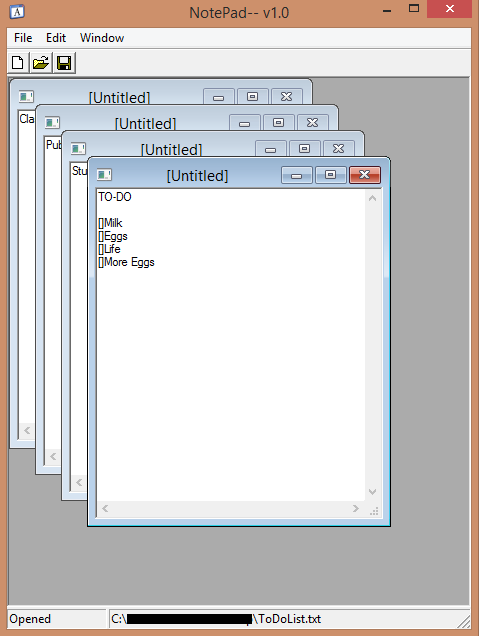
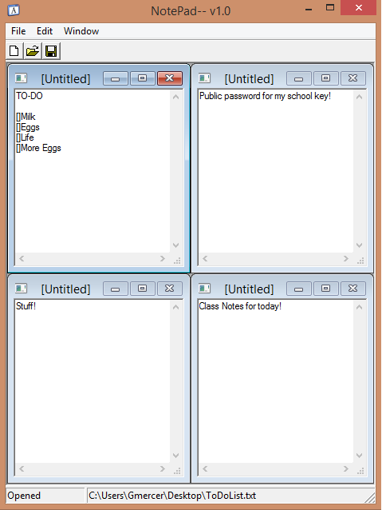

A better notepad for the every day multitasker
NoteM2 can be considered one of the most ground breaking applications today! Ok, well maybe it's not that big, but NoteM2 aim's to keep notepad's simplistic style while offering tools to multi taskers that can improve every day use. The software is open source, any developers wishing to contribute should fork and follow these steps:(skip this portion if you aren't here to develop)
$ git clone https://github.com/your_git_name/NoteM2.git
$ git remote add upstream https://github.com/Gmercer015/NoteM2.git
$ git fetch upstream
$ git merge upstream/master
If you're using the GitHub for Mac, simply sync your repository and you'll see the new branch.
Easily jump from files and organize everything in one neat window. Gone are the days of cycling through 3 notepad files looking for your text file containing a key, simply open everything inside NoteM2 and hit tile!
The main application acts as your canvas, while your files fill that canvas. Nothing leaves the boarders of NoteM2, everything is cleanly packed into the application. If you don't believe me see for yourself:
 NoteM2 calculates the perfect fit for all open notes, maximizing space.
You can find more of my work at @Gmercer015, don't forget to follow me for more project updates! NoteM2 was written using C++ and the WIN32 API, yea, I'm not sure what I was thinking either. With the WIN32 API's demise NoteM2 might not see updates until the late 4th quarter of 2014.
Have you somehow managed to have trouble with NoteM2 and it's 8 button interface? No worries! You can contact me at Gmercer015@gmail.com for any help or suggestions and we'll sort it out.